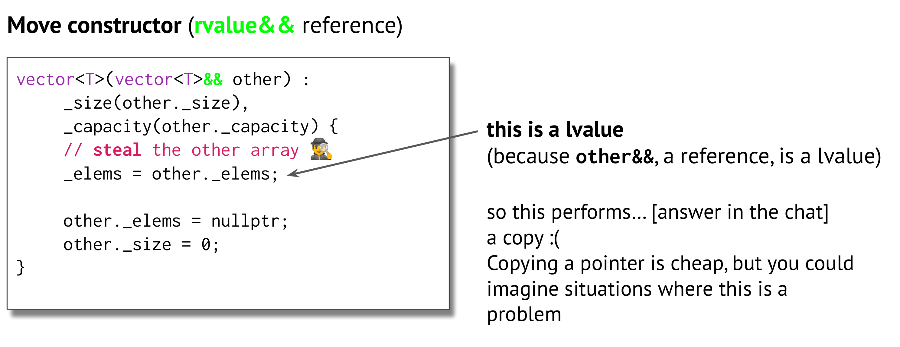

资源请见Assignment 2.
Lecturer Avery Assignment 2 Grading Overview.
Milestone 1: Const-Correstness
- 更改
main.cpp中student_main()调用函数的参数.其中，1
2
3
4
5
6
7
8
9
10
11
12
13
14
15
16
17int student_main() {
cout << "This is student main. You can try using HashMap as a client by editing the code here!" << endl;
HashMap<string, int> map;
init_map(map);
std::set<string> keys = find_keys(map);
cout << "Find the difference in time between two lecturers! \n" <<
"Please enter two names from this list, separated by a space. Then hit ENTER\n" << endl;
for(auto it = keys.begin(); it != keys.end(); ++it){
cout << *it << endl;
}
string name1;
string name2;
cin >> name1;
cin >> name2;
print_difference(map, name1, name2);
return 0;
}init_map需要对参数做改动，不需加const.1
2
3
4void init_map(HashMap<string, int>& map);
void print_difference(const HashMap<string, int>& lecturer_record, const string lecturer1, const string lecturer2);
template<typename KeyType, typename MappedTyped>
const std::set<KeyType>& find_keys(const HashMap<KeyType, MappedTyped>& map); - 更改HashMap类
需要注意const在区分重载函数时也起作用. 对于两个参数列表完全相同的重载函数，只要其一为常函数，那么就是合法的重载. 反之不然.
对于绝大多数不改变对象属性的函数，直接加const即可. 这是因为非常对象亦可调用常函数.
对于at()，需要添加新的重载函数.
这是因为常对象希望返回值为const M&，以保证其值不会通过变量别名的方式修改.
这里为了避免代码重复，我们使用const_cast<newtype>(expression).
注意，只有const_cast<>()可以实现const与nonconst对象之间的转换.
const_castcan be used to remove or addconstto a variable; no other C++ cast is capable of removing it (not evenreinterpret_cast). It is important to note that modifying a formerlyconstvalue is only undefined if the original variable isconst; if you use it to take theconstoff a reference to something that wasn't declared withconst, it is safe. This can be useful when overloading member functions based onconst, for instance. It can also be used to addconstto an object, such as to call a member function overload.From stackoverflow.
1 | // ADD |
对于find()等函数，由于其返回值为iterator，因此需要重载.
此处关键词typename告知编译器HashMap<K, M, H>::const_iterator是变量类型. 这样做是因为在模板实例化之前编译器并不知晓其具体定义.
在模板函数的返回值类型依赖于模板参数时，需要使用typename.
1 | // Notice the keyword `typename` for template function. |
具体实现如下.
1 | //ADD |
对于部分函数，文件hashmap.h在注释中已经表示不需考虑.
1 | \\ Hint: on the assignment, you should NOT need to call this function. |
Writeup
at() vs []
Explain the difference between
at()and the implementation of the operator[]. Wy did you have to overload one and not the other?Hint: You will likely only need to read the header comments to do this
Notes: recall that operator[], which you will implement, does not throw exceptions, if a key is not found. Instead, it will create a K/M pair for that key with a default mapped value. This function is also not const-correct, which you will fix in milestone 2.
operator[] 函数定义本身允许对Hashmap做改动，因此不应当被常函数调用，不应重载.
Find vs. 𝓕𝓲𝓷𝓭
In addition to the
HashMap::findmember function, there is also astd::findfunction in the STL algorithms library. If you were searching for key k in HashMap m, is it preferable to callm.find(k)orstd::find(m.begin(), m.end(), k)?Hint: on average, there are a constant number of elements per bucket. Also, one of these functions has a faster Big-O complexity because one of them uses a loop while another does something smarter.
find_node()是顺序遍历实现查找的，是较慢的查找算法.RAII?
This HashMap class is RAII-compliant. Explain why.
HashMap的析构函数调用
clear()，实现了内存的释放.Increments
Briefly explain the implementation of HashMapIterator's operator++, which we provide for you. How does it work and what checks does it have?
实现如下.
1
2
3
4
5
6
7
8
9
10
11
12
13
14
15
16
17
18
19
20template <typename Map, bool IsConst>
HashMapIterator<Map, IsConst>& HashMapIterator<Map, IsConst>::operator++() {
_node = _node->next; // _node can't be nullptr - that would be incrementing end()
if (_node == nullptr) { // if you reach the end of the bucket, find the next bucket
for (++_bucket; _bucket < _buckets_array->size(); ++_bucket) {
_node = (*_buckets_array)[_bucket];
if (_node != nullptr) {
return *this;
}
}
}
return *this;
}
template <typename Map, bool IsConst>
HashMapIterator<Map, IsConst> HashMapIterator<Map, IsConst>::operator++(int) {
auto copy = *this; // calls the copy constructor to create copy
++(*this);
return copy;
}这里重载是为了区分
++Var与Var++. 这样的区分是如何实现的？To solve this problem, the postfix versions take an extra (unused) parameter of type int. When we use a postfix operator, the compiler supplies 0 as the argument for this parameter. Although the postfix function can use this extra parameter, it usually should not. That parameter is not needed for the work normally performed by a postfix operator. Its sole purpose is to distinguish a postfix function from the prefix version.
From C++ Primer.
Milestone 2: Special Member Functions and Move Semantics
为 HashMap 实现 SMF. - Default constructor (implemented for you) - Destructor (implemented for you) - Copy constructor - Copy assignment operator - Move constructor - Move assignment operator
Copying is not as simple as copying each member variable, that's why we need SMF.
Copy Constructor/Assignment Operator
需要使用insert().
1 | template<typename K, typename M, typename H> |
Move Constructor/Assignment Operator
构造函数利用参数列表传参时有两种写法.
1 | template<typename K, typename M, typename H> |
其中{}可替换成()，使用花括弧的好处如下.
The
{}syntax, known as brace or list initialization, was introduced in C++11 and has some advantages over():
- It disallows narrowing conversions (e.g., from
doubletoint).- It can be used to initialize aggregate types.
- It can be used to call a constructor that takes an
std::initializer_list.
注意在实现时不要将右值引用作为常参数，因为我们需要对其做如下类似改动.
1 | other._elems = nullptr; |
1 | HashMap<K, M, H>::HashMap(HashMap&& other) : |
Test
运行测试无输出，既不显示结果，亦不输出错误.
与正确答案做对比.
替换tests.cpp与test_setting.cpp，运行正常.
替换main.cpp与hashmap_iterator.cpp，运行正常.
找了两三天😓...逐行对比，发现错误.
1 | //ADD |
结果如下.
1 | E:\CS106L\assignments\HashMap_Starter>.\main |
Writeup
Attachment Issues
Why is it that we need to implement the special member functions in the HashMap class, but we can default all the special member functions in the HashMapIterator class?
Hint: your answer should reference the Rule of Five (the Rule of 3 including move operations) vs. the Rule of Zero, and also talk about std::vector's copy constructor/assignment operator.
主要涉及到深拷贝.
Move Semantics
In your move constructor or move assignment operator, why did you have to std::move each member, even though the parameter (named rhs) is already an r-value reference?
以下回答来自Copilot.
The
std::moveis used in move constructors or move assignment operators to indicate that an object t may be "moved from", i.e., allowing the efficient transfer of resources from t to another object.In your case, even though the parameter
rhsis already an r-value reference, you still need to usestd::moveon each member becauserhsis a named r-value reference. Once an r-value reference has been named (likerhsin your case), it becomes an l-value and cannot be moved from withoutstd::move.Here's a simple example to illustrate this:
1
2
3
4
5
6class MyClass {
std::vector<int> vec;
public:
MyClass(std::vector<int>&& vec) : vec(vec) {} // Incorrect
MyClass(std::vector<int>&& vec) : vec(std::move(vec)) {} // Correct
};In the incorrect constructor,
vecis a named r-value reference, so it's treated as an l-value and the copy constructor ofstd::vectoris called, which is not what we want. In the correct constructor,std::moveis used to cast the named r-value reference back to an r-value, which calls the move constructor ofstd::vector, achieving the desired efficiency.Slides中有讲解如下.

实现HashMap
暂时结束. 早年的作业似乎是徒手实现这样一个hashmap，现在作业的难度大大降低. 数据结构学完之后，或可尝试实现.